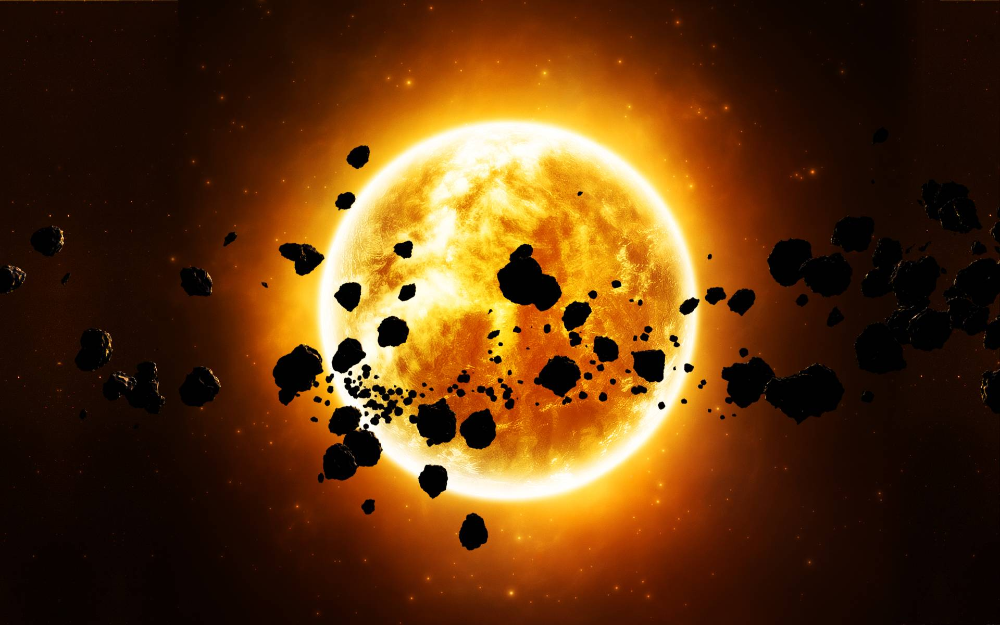

ดาวพุธ Mercury
ดาวพุธเป็นดาวเคราะห์ที่อยู่ใกล้ดวงอาทิตย์ที่สุด และเป็นดาวเคราะห์ที่เล็กที่สุดในระบบสุริยะ พื้นผิวเต็มไปด้วยหลุมอุกกาบาตคล้ายดวงจันทร์ เพราะแทบไม่มีชั้นบรรยากาศคอยป้องกัน
เรียนรู้เกี่ยวกับระบบสุริยะ

ระบบสุริยะคือกลุ่มของวัตถุท้องฟ้าที่โคจรรอบดวงอาทิตย์ โดยมีดวงอาทิตย์เป็นศูนย์กลางและเป็นแหล่งพลังงานหลัก ภายในระบบสุริยะประกอบด้วยดาวเคราะห์ 8 ดวง ได้แก่ ดาวเคราะห์แคระ ดวงจันทร์จำนวนมาก ดาวเคราะห์น้อย ดาวหาง ก๊าซ ฝุ่น และวัตถุขนาดเล็กอื่น ๆ
ดาวเคราะห์ทั้ง 8 ดวงเรียงจากใกล้ดวงอาทิตย์ไปไกลที่สุด ได้แก่ ดาวพุธ ดาวศุกร์ โลก ดาวอังคาร ดาวพฤหัสบดี ดาวเสาร์ ดาวยูเรนัส และดาวเนปจูน
ระบบสุริยะมีดาวเคราะห์ 8 ดวง ได้แก่ เวเนซุลา, มาร์ส, โลก, จูพิเตอร์, ซัตเทิร์น, นิปเตอร์, อูรานัส และเนปจูน
ดาวพุธเป็นดาวเคราะห์ที่อยู่ใกล้ดวงอาทิตย์ที่สุด และเป็นดาวเคราะห์ที่เล็กที่สุดในระบบสุริยะ พื้นผิวเต็มไปด้วยหลุมอุกกาบาตคล้ายดวงจันทร์ เพราะแทบไม่มีชั้นบรรยากาศคอยป้องกัน
ดาวศุกร์เป็นดาวเคราะห์ที่ร้อนที่สุดในระบบสุริยะ เนื่องจากมีชั้นบรรยากาศที่หนาแน่นและประกอบด้วยก๊าซคาร์บอนไดออกไซด์มากมาย ทำให้เกิดปรากฏการณ์เรือนกระจกอย่างรุนแรง
โลกเป็นดาวเคราะห์ที่มีชั้นบรรยากาศที่หนาแน่น ทำให้มีอุณหภูมิที่สามารถใช้ในการเจริญเติบโตของชีวิตได้ มีน้ำในรูปแบบของเหลวบนพื้นผิว และมีสิ่งมีชีวิตหลากหลายชนิดอาศัยอยู่
ดาวอังคารมักถูกเรียกว่า “ดาวเคราะห์สีแดง” เพราะพื้นผิวมีฝุ่นและแร่เหล็กออกไซด์ มีภูเขาไฟขนาดใหญ่ หุบเขายาว และเป็นหนึ่งในดาวที่มนุษย์สนใจสำรวจมากที่สุด
ดาวพฤหัสบดีเป็นดาวเคราะห์ที่ใหญ่ที่สุดในระบบสุริยะ เป็นดาวแก๊สยักษ์ ไม่มีพื้นผิวแข็งแบบโลก จุดเด่นคือพายุขนาดใหญ่ที่เรียกว่า Great Red Spot และมีดวงจันทร์จำนวนมาก
ดาวเสาร์เป็นดาวเคราะห์ที่มีวงแหวนที่สวยงามและโดดเด่นที่สุดในระบบสุริยะ วงแหวนประกอบด้วยน้ำแข็งและเศษหินขนาดเล็ก มีดวงจันทร์จำนวนมากเช่นกัน
ดาวยูเรนัสเป็นดาวเคราะห์น้ำแข็งยักษ์ มีสีฟ้าอมเขียวจากก๊าซมีเทนในชั้นบรรยากาศ จุดเด่นคือแกนหมุนเอียงมาก ทำให้ดูเหมือนหมุนตะแคงเมื่อเทียบกับดาวเคราะห์ดวงอื่น
ดาวเนปจูนเป็นดาวเคราะห์ที่อยู่ไกลจากดวงอาทิตย์ที่สุดในบรรดาดาวเคราะห์ทั้ง 8 ดวง เป็นดาวเคราะห์น้ำแข็งยักษ์ มีสีน้ำเงินเข้ม และมีลมที่รุนแรงมาก
ระบบสุริยะมีดาวเคราะห์ 8 ดวง และดาวเคราะห์แคระที่ได้รับการยอมรับอย่างเป็นทางการ 5 ดวง ได้แก่ Ceres, Pluto, Haumea, Makemake และ Eris
ดวงอาทิตย์เป็นดาวฤกษ์เพียงดวงเดียวในระบบสุริยะ และแรงโน้มถ่วงของมันช่วยยึดดาวเคราะห์และวัตถุต่าง ๆ ให้โคจรรอบมัน
ดาวพฤหัสบดีเป็นดาวเคราะห์ที่ใหญ่ที่สุดในระบบสุริยะ
ดาวพุธเป็นดาวเคราะห์ที่เล็กที่สุดและอยู่ใกล้ดวงอาทิตย์ที่สุด
ดาวเนปจูนเป็นดาวเคราะห์ที่อยู่ไกลดวงอาทิตย์ที่สุด
ดาวเคราะห์ชั้นใน 4 ดวง ได้แก่ ดาวพุธ ดาวศุกร์ โลก และดาวอังคาร เป็นดาวเคราะห์หิน
ดาวเคราะห์ชั้นนอก 4 ดวง ได้แก่ ดาวพฤหัสบดี ดาวเสาร์ ดาวยูเรนัส และดาวเนปจูน เป็นดาวเคราะห์ยักษ์
ดาวเสาร์มีวงแหวนที่เด่นชัดที่สุด แต่ดาวเคราะห์ยักษ์ดวงอื่นก็มีวงแหวนเช่นกัน
ปัจจุบัน โลกเป็นดาวเคราะห์เพียงดวงเดียวที่เรารู้ว่ามีสิ่งมีชีวิต
ระบบสุริยะไม่ได้จบแค่ดาวเนปจูน แต่ยังมีบริเวณไกลออกไป เช่น Kuiper Belt และ Oort Cloud